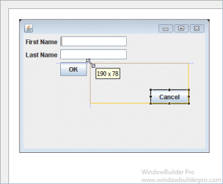
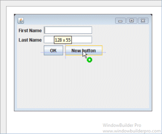
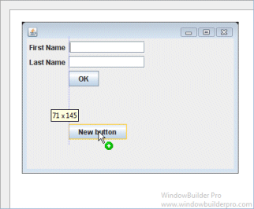
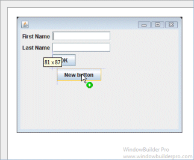
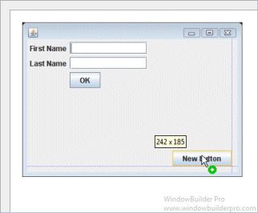
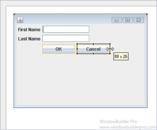
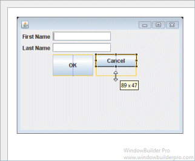
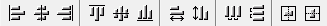
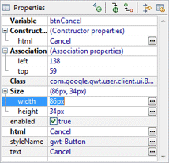

Main Features
- Select AbsolutePanel from the Panels palette

- Graphical feedback is provided for all widget size and position operations

Graphical Feedback
- Position and size widgets using snapping feedback

- Provide position and size feedback via tooltips
- Align widgets horizontally and vertically

- Indent widgets intelligently

- Align widgets to margins

- Replicate widget heights and widths
 
- Align and center widgets using toolbar

- Set size and location (association) properties using the Property Pane
